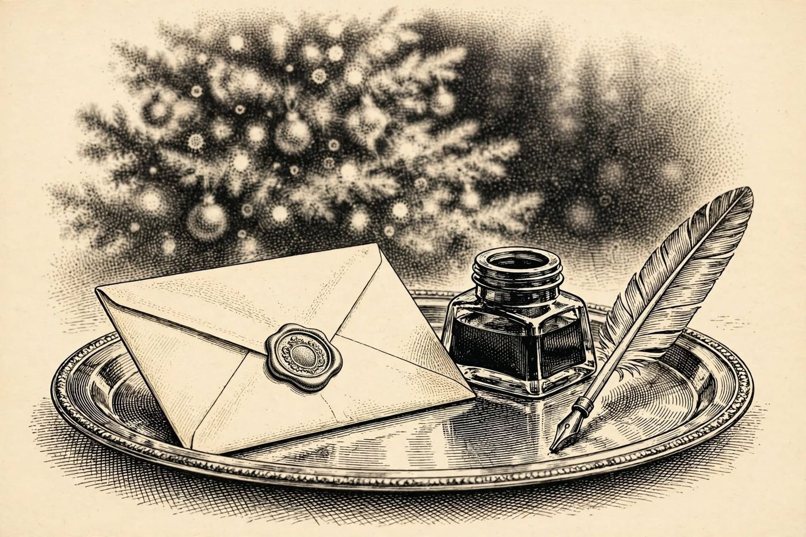

24 de diciembre
Nochebuena en la cumbre
Libro · págs. 100-103
Audio del día
Transcripción
«Es Nochebuena, detective. Ya están todos en el gran salón, en círculo, junto al árbol. El quitanieves llegará a las cuatro. Tiene delante las palabras que ha ido reuniendo durante veintitrés días. Ocho de ellas guardan la respuesta a la última pregunta: por qué. Escríbala. Y después diga, delante de todos, lo que sabe.»

Intenta resolverlo primero. Abre solo lo que necesites, en este orden.
1Pista sutil
Recupera las palabras-clave de los Días 9, 8, 14, 19, 5, 7, 6 y 17. Extrae la letra en la posición que te indica la tabla para formar la palabra de 8 letras que responde al motivo.
2Comprobación parcial
Las primeras cuatro letras obtenidas de las palabras-clave indicadas son V, E, N y G.
Candado final: suma las cifras de los días 4 (33), 13 (9), 17 (42) y 21 (40). El resultado, 124, es la página donde empieza el sobre sellado en la edición impresa.
3Pista fuerte
Las palabras son VESPER, HIELO, BANDEJA, AGUA, ACONITINA, ACONITO, DIEZ y ESFERAS. De cada una toma la letra de la posición indicada, y lee de la fila 1 a la fila 8.
4Solución oficialSpoiler si no lo has intentado
Meta-enigma:
Día 9 (VESPER, letra 1) → V
Día 8 (HIELO, letra 3) → E
Día 14 (BANDEJA, letra 3) → N
Día 2 (AGUA, letra 2) → G
Día 5 (ACONITINA, letra 1) → A
Día 7 (ACONITO, letra 4) → N
Día 6 (DIEZ, letra 4) → Z
Día 17 (ESFERAS, letra 6) → A
INFORME FINAL DEL DETECTIVE:
¿Quién?: Ingrid Falk (nacida Ingrid Sorel).
¿Cómo?: Envenenamiento con aconitina oculto en el núcleo de una esfera de hielo que se congeló en un molde idéntico a la bandeja L y se cambió en el bar.
¿Cuándo?: 1905 (Sustitución de la bandeja a las 19:05 del 30 de noviembre).
¿Por qué?: VENGANZA (Ingrid llevaba semanas preparándolo todo; cuando Lombard anunció su decisión en la cena, creyó que era una maniobra para vender la colección, quemar el Libro Vesper y escapar impune, y no esperó más. No sabía que Lombard iba a confesar el fraude, devolver lo obtenido y dejarle el 40 % de su fortuna).
El anónimo del 8 de noviembre lo envió Ingrid, desde Zúrich.
Para el desenlace de la historia, vuelve al libro: la sección de soluciones está al final.